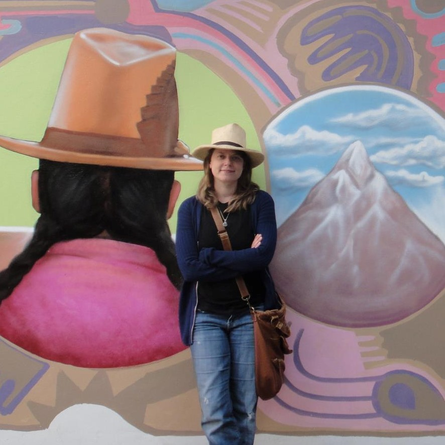

Hola, mi nombre es Rowenn Kalman, PHD.
Algunos me llaman Rosita. Hice un estudio antropológico sobre la conciencia ambiental en Ancash, Perú. Esta es mi tesis, con un resumen en español:
Descarga la tesis de R. KalmanTambién está disponible un informe preliminar que hice en español el año 2011:
Descarga el informe preliminarComunicación: contact@example.com